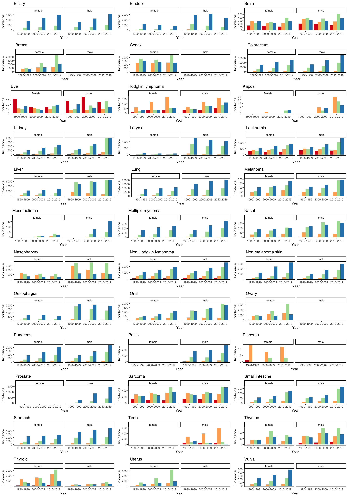

Chapter 6 Cancer genomics and epidemiology
6.1 Case study 1: analysis of cBioportal mutation data
Non-small cell lung cancer is a deadly disease, and we would like to identify mutations in genes that drive its formation and progression. George et al. (2015) has sequenced 120 small cell lung cancer samples and this data is available from cBioportal. The original data is in the MAF, and we have selected a subset of the columns, normalized the column names, and made the data available as an RDS file.
In this exercise, we will explore the mutation data and examine genes that are frequently mutated in non-small cell lung cancer samples. We will implement a simple method for identifying candidate tumour suppressors based on loss-of-function mutations.
6.1.1 Exploratory analysis
Q1. Load the data named mutations_sclc_ucologne_2015.rds into R.
Examine it using head.
In this data.frame, each row is a mutation detected in a particular gene
from a particular sample in the study.
For more information on the columns, see the MAF specification.
Q2. Identify the top 10 most frequently mutated genes.
# calculate count frequencies using table
?table
# freqs <- ???
# sort the frequency vector in decreasing order
?sort
# freqs <- ???
# select the first 10 genes in the freqs
# freqs.top <- ???
# obtain the gene names
# genes <- names(freqs.top);
# print(freqs.top)Q3. Tabulate the count frequencies of variant_class.
What proportion of variants are Silent or inside an Intron?
Q4. A variant class value frame_shift_del appears to be misspelt due to
case sensitivity. Correct this error.
Q5. To help us simplify the variant classes into loss-of-function or neutral,
let us import the mutation_effects.tsv data.
Q6. Define a new column in x that converts the variant classes to effects.
Q7. Create a subset of the data for the most frequently mutated genes, and tabulate the mutation count frequencies of variant classes for each gene.
# x.sub <- x[???, ]
# order the factor levels based on `genes`,
# which was previously sorted in decreasing order of frequency
# x.sub$gene <- factor(x.sub$gene, levels=genes);
?tableQ8. Determine the number of mutations in each effect category, across all genes.
Save the result in a variable named overall.counts.
Q9. Tabulate the mutation count frequencies for each gene and effect.
Save the results in a variable named gene.counts.
Look up the frequently mutated genes in this matrix.
6.1.2 Statistical analysis
Here, we implemented a simple statistical test for assessing whether a gene is significantly frequently targeted by loss-of-function mutations, based on the Fisher’s exact test.
# Test whether a query gene has significantly more loss-of-function
# mutations compared with other genes.
# Requires global variables `gene.counts` and `overall.counts`
lof_test <- function(gene) {
# Construct the following contingency table:
# neutral lof
# other genes a b
# query gene c d
cols <- c("neutral", "loss_of_function");
gene.counts.sel <- gene.counts[gene, cols];
ct <- matrix(
c(
overall.counts[cols] - gene.counts.sel,
gene.counts.sel
),
byrow=TRUE,
ncol=2
);
# Test whether the lof mutations are greater in frequency compared
# to neutral mutations in the query gene, in comparison to all other genes
fisher.test(ct, alternative="greater")
}Q10. Subset the gene.counts table for the TP53 gene.
Run lof_test on this gene.
Q11. Now, test to see if TTN and MUC16 are significantly frequently targeted by loss-of-function mutations.
Q12. Apply the loss-of-function test to all frequently mutated genes.
Q13. Extract odds ratio and p-values from the test results.
Q14. Since we tested many genes, we need to adjust for multiple hypothesis testing so that we can control the false discovery rate. So, adjust the p-values to obtain q-values.
Q15. Construct a results data.frame with gene names, odds ratio, p-values,
and q-values that summarize the loss-of-function test results.
# res <- data.frame(
# gene = ???,
# odds_ratio = ???,
# p = ???,
# q = ???
# );
?order
#res <- res[order(???), ];Q16. Identify the significant genes from the results data.frame at a
false discovery rate of 5% (i.e. q-value threshold of 0.05).
Q17. Look up the significant genes in the gene.counts matrix.
6.1.3 Literature search
Q18. Do the significant genes appear to be involved in cancer? What general roles do they play?
Q19. How do these genes contribute specifically to the formation or progression of small cell lung cancer?
Q20. What are some possible ways of identifying oncogenes that are activated by mutations or other genomic alterations?
6.2 Case study 2: Cancer Epidemiology
by Prof. Jason Wong
Date: 31-10-2024
The RMarkdown notebook to run your own code can be downloaded here [right click -> save link as]
6.2.1 Scenario
You are a grants officer working for the Hong Kong Health Bureau. The HK government has recently announced new special funding in cancer research to be administered by the Bureau. You are tasked with coming up with a proposal for distribution of funding to specific cancer types that are in most need of research.
Discussion points:
What is important to consider when selecting a cancer type in need of research?
What type of data is required?
6.2.2 Hong Kong population
You are aware that, generally, cancer is a disease that affects the elderly more than the young. You decide first to take a closer look at the structure of the population of Hong Kong.
Historical population of Hong Kong can be obtained from the Census and Statistics Department.
An abridged version of the full historical population of Hong Kong is provided here, containing the population of Hong Kong from 1965, 1975, 1985, 1995, 2005, 2015 and 2022 categorised by sex and age (0-19, 20-44, 45-64, 65+).
Discussion points:
What is the trend in Hong Kong’s population over the past ~60 years?
What is the best way to visualise this data?
6.2.2.1 Download population data
HKPop<- read.table("https://github.com/StatBiomed/BMDS-book/raw/main/notebooks/module5-epidemi/HK_population_1965-2022.txt",
sep = "\t", header = TRUE, stringsAsFactor=FALSE, check.names = FALSE)
HKPop
#> Sex Age 1965 1975 1985 1995 2005 2015 2022
#> 1 male 0-19 901.9 989.7 909.0 835.6 719.0 613.8 530.6
#> 2 male 20-44 607.4 795.6 1210.2 1363.7 1263.7 1146.9 1039.2
#> 3 male 45-64 266.5 414.3 525.9 615.7 896.6 1084.9 1046.2
#> 4 male 65+ 42.2 84.6 170.5 269.3 384.7 520.0 713.6
#> 5 female 0-19 865.6 938.8 840.3 780.7 684.1 575.0 502.1
#> 6 female 20-44 539.3 685.6 1093.7 1423.6 1530.4 1531.8 1338.7
#> 7 female 45-64 286.3 400.7 470.7 535.0 884.7 1224.3 1314.7
#> 8 female 65+ 88.7 152.3 235.9 332.5 450.0 594.6 806.56.2.2.2 Format data for plotting
Here we convert the original dataframe into simplified format for ggplot2.
male<-data.frame(year = as.numeric(colnames(HKPop[1,3:9])),
`0-19` = as.numeric(HKPop[1,3:9]),
`20-44` = as.numeric(HKPop[2,3:9]),
`45-64` = as.numeric(HKPop[3,3:9]),
`65+` = as.numeric(HKPop[4,3:9]),
check.names = FALSE)
female<-data.frame(year = as.numeric(colnames(HKPop[1,3:9])),
`0-19` = as.numeric(HKPop[5,3:9]),
`20-44` = as.numeric(HKPop[6,3:9]),
`45-64` = as.numeric(HKPop[7,3:9]),
`65+` = as.numeric(HKPop[8,3:9]),
check.names = FALSE)
if (!require("tidyverse")) install.packages("tidyverse")
male<-as_tibble(male) %>% select(year,`0-19`,`20-44`,`45-64`,`65+`) %>% gather (key="age",value="population ('000s)",-year)
female<-as_tibble(female) %>% select(year,`0-19`,`20-44`,`45-64`,`65+`) %>% gather (key="age",value="population ('000s)",-year)
male
#> # A tibble: 28 × 3
#> year age `population ('000s)`
#> <dbl> <chr> <dbl>
#> 1 1965 0-19 902.
#> 2 1975 0-19 990.
#> 3 1985 0-19 909
#> 4 1995 0-19 836.
#> 5 2005 0-19 719
#> 6 2015 0-19 614.
#> 7 2022 0-19 531.
#> 8 1965 20-44 607.
#> 9 1975 20-44 796.
#> 10 1985 20-44 1210.
#> # ℹ 18 more rows
female
#> # A tibble: 28 × 3
#> year age `population ('000s)`
#> <dbl> <chr> <dbl>
#> 1 1965 0-19 866.
#> 2 1975 0-19 939.
#> 3 1985 0-19 840.
#> 4 1995 0-19 781.
#> 5 2005 0-19 684.
#> 6 2015 0-19 575
#> 7 2022 0-19 502.
#> 8 1965 20-44 539.
#> 9 1975 20-44 686.
#> 10 1985 20-44 1094.
#> # ℹ 18 more rows6.2.2.3 Plotting population data
Uses ggplot2 and gridExtra to make line plot of male and female population data side-by-side.
if (!require("ggplot2")) install.packages("gglot2")
if (!require("gridExtra")) install.packages("gridExtra")
library(ggplot2)
library(gridExtra)
#Import the necessary packages and libraries
pmale<-ggplot(male,aes(x=year,y=`population ('000s)`,group=age))+
geom_line(aes(color=age))+
geom_point(aes(color=age))+
scale_color_brewer(palette="Spectral")+
theme_classic()+
ylim(0,1600)+
theme(legend.position="none")+
scale_x_continuous(breaks = seq(1965, 2022, by = 10))+
ggtitle("male")
pfemale<-ggplot(female,aes(x=year,y=`population ('000s)`,group=age))+
geom_line(aes(color=age))+
geom_point(aes(color=age))+
scale_color_brewer(palette="Spectral")+
theme_classic()+
ylim(0,1600)+
theme(legend.position="right",axis.title.y = element_blank())+
scale_x_continuous(breaks = seq(1965, 2022, by = 10))+
ggtitle("female")
grid.arrange(pmale,pfemale,ncol=2,widths=c(3,3.75))
6.2.3 Cancer registry data
It is clear that Hong Kong has an aging population, thus cancer incidence would also likely increase. To examine cancer incidence and mortality in Hong Kong you obtain data from the Hong Kong Cancer Registry, which is maintained by the Hospital Authority.
Cancer incidence data was summarised for the last three decades (1990-1999, 2000-2009 and 2010-2019).
Discussion points:
Has incidence been increasing for most cancers? How about mortality?
How has cancer risk and mortality rate changed in the past 3 decades?
Has the incidence-to-mortality ratio been decreasing generally? Is it statistically significant?
Which cancer type has the highest incidence in children (0-19) when compared with the elderly (65+). Is this statistically significantly different to incidence of children versus elderly cancers in general?
6.2.3.1 Download cancer registry data
HKCancer<- read.table("https://github.com/StatBiomed/BMDS-book/raw/main/notebooks/module5-epidemi/HK_cancer_incidence_mortality_1990-2020.txt",
sep = "\t", header = TRUE, stringsAsFactor=FALSE)
HKCancer
#> Type Sex Age Year Biliary Bladder Brain Breast Cervix
#> 1 incidence male 0-19 1990-1999 0 6 212 0 0
#> 2 incidence male 20-44 1990-1999 36 165 368 6 0
#> 3 incidence male 45-64 1990-1999 322 1266 393 28 0
#> 4 incidence male 65+ 1990-1999 830 2920 318 35 0
#> 5 incidence male 0-19 2000-2009 0 2 206 0 0
#> 6 incidence male 20-44 2000-2009 31 103 267 9 0
#> 7 incidence male 45-64 2000-2009 297 900 372 52 0
#> 8 incidence male 65+ 2000-2009 1134 3103 299 96 0
#> 9 incidence male 0-19 2010-2019 0 2 155 0 0
#> 10 incidence male 20-44 2010-2019 28 18 276 14 0
#> 11 incidence male 45-64 2010-2019 530 648 511 72 0
#> 12 incidence male 65+ 2010-2019 1568 2399 380 107 0
#> 13 incidence female 0-19 1990-1999 0 2 149 6 0
#> 14 incidence female 20-44 1990-1999 52 62 283 4228 1263
#> 15 incidence female 45-64 1990-1999 246 246 238 5311 1839
#> 16 incidence female 65+ 1990-1999 909 1199 284 4122 1574
#> 17 incidence female 0-19 2000-2009 0 0 132 4 4
#> 18 incidence female 20-44 2000-2009 34 39 223 5887 1204
#> 19 incidence female 45-64 2000-2009 287 179 265 11833 1676
#> 20 incidence female 65+ 2000-2009 1190 1090 237 5774 1329
#> 21 incidence female 0-19 2010-2019 0 2 119 1 0
#> 22 incidence female 20-44 2010-2019 36 17 223 6658 1294
#> 23 incidence female 45-64 2010-2019 452 188 394 22096 2288
#> 24 incidence female 65+ 2010-2019 1500 872 283 10337 1269
#> 25 mortality male 0-19 1990-1999 0 0 76 0 0
#> Colorectum Eye Hodgkin.lymphoma Kaposi Kidney Larynx Leukaemia Liver Lung
#> 1 15 29 35 0 24 1 356 58 6
#> 2 1087 8 64 0 141 86 509 1741 1036
#> 3 4644 9 47 0 530 824 453 5702 8420
#> 4 8058 21 41 0 721 1265 623 4806 15152
#> 5 5 38 32 0 20 0 329 33 3
#> 6 957 8 119 9 221 37 437 1116 772
#> 7 6418 18 77 4 1071 658 642 6015 7909
#> 8 13352 13 77 8 1275 1125 864 5808 18870
#> 9 6 26 53 0 31 0 338 24 2
#> 10 1005 10 163 25 293 29 401 659 541
#> 11 10034 28 87 18 1978 684 1033 6500 9523
#> 12 18003 15 114 12 1977 1043 1381 6716 20588
#> 13 2 33 10 0 25 0 296 37 7
#> 14 932 11 61 0 98 13 393 353 597
#> 15 3166 9 19 0 256 59 312 1093 2629
#> 16 7728 16 33 0 503 130 534 2244 8428
#> 17 5 14 30 0 15 0 219 13 5
#> 18 938 12 122 2 120 5 405 212 625
#> 19 4430 10 33 0 482 37 469 1041 3397
#> 20 10810 8 35 0 830 85 723 2637 9517
#> 21 5 14 32 0 19 0 237 21 0
#> 22 1057 9 174 0 135 7 443 168 647
#> 23 7200 16 58 4 887 47 786 1168 6312
#> 24 13119 20 58 5 1203 84 913 3007 10872
#> 25 10 3 0 0 2 0 120 36 1
#> Melanoma Mesothelioma Multiple.myeloma Nasal Nasopharynx
#> 1 3 0 1 4 33
#> 2 50 0 43 53 3049
#> 3 82 0 210 109 3724
#> 4 107 0 421 120 1212
#> 5 1 0 1 7 16
#> 6 41 5 38 38 2114
#> 7 98 34 326 161 3750
#> 8 137 77 674 137 1177
#> 9 0 0 0 3 21
#> 10 47 4 26 41 1339
#> 11 186 51 525 174 3653
#> 12 195 154 910 154 1207
#> 13 2 0 1 1 13
#> 14 44 0 19 31 1380
#> 15 58 0 150 57 1157
#> 16 102 0 417 93 536
#> 17 2 0 0 5 6
#> 18 41 8 21 36 942
#> 19 102 12 185 74 1187
#> 20 118 14 559 92 465
#> 21 3 0 0 6 6
#> 22 70 10 24 37 583
#> 23 128 34 399 105 1145
#> 24 179 24 636 102 389
#> 25 2 0 0 0 6
#> Non.Hodgkin.lymphoma Non.melanoma.skin Oesophagus Oral Ovary Pancreas Penis
#> 1 137 8 0 18 0 4 2
#> 2 596 211 158 324 0 106 19
#> 3 997 613 1873 1165 0 514 78
#> 4 1210 968 2203 1055 0 887 184
#> 5 111 4 0 6 0 1 0
#> 6 454 220 82 312 0 71 18
#> 7 1216 917 1528 1354 0 780 71
#> 8 1756 1835 2126 1416 0 1440 199
#> 9 106 1 0 9 0 1 0
#> 10 487 291 54 304 0 109 21
#> 11 1910 1782 1321 1941 0 1402 154
#> 12 2633 2975 1982 1813 0 2302 279
#> 13 75 2 0 21 77 2 0
#> 14 444 156 48 241 854 60 0
#> 15 594 374 254 364 970 290 0
#> 16 1120 1249 761 485 776 875 0
#> 17 43 4 1 20 108 0 0
#> 18 461 182 13 254 1299 62 0
#> 19 888 580 190 454 1846 461 0
#> 20 1409 2476 725 768 891 1329 0
#> 21 57 4 0 9 84 3 0
#> 22 475 303 16 259 1466 92 0
#> 23 1561 1168 174 920 3166 923 0
#> 24 1883 3268 624 1091 1128 2101 0
#> 25 25 0 0 1 0 3 0
#> Placenta Prostate Sarcoma Small.intestine Stomach Testis Thymus Thyroid
#> 1 0 0 137 0 5 61 12 22
#> 2 0 10 320 31 429 275 71 250
#> 3 0 481 281 102 1990 80 70 288
#> 4 0 3073 261 131 3634 129 59 194
#> 5 0 0 118 0 6 57 16 21
#> 6 0 6 307 34 331 395 96 333
#> 7 0 1588 367 113 1954 65 137 447
#> 8 0 8676 316 163 4256 44 94 278
#> 9 0 1 110 1 2 53 23 17
#> 10 0 18 299 46 192 587 68 496
#> 11 0 4128 527 293 2158 100 137 834
#> 12 0 14703 507 336 4720 15 85 424
#> 13 1 0 128 1 1 0 3 80
#> 14 13 0 283 22 492 0 38 1294
#> 15 0 0 232 53 826 0 38 788
#> 16 0 0 232 116 2319 0 38 479
#> 17 0 0 105 0 2 0 1 81
#> 18 8 0 322 24 379 0 64 1659
#> 19 3 0 300 80 971 0 116 1570
#> 20 0 0 247 153 2512 0 65 595
#> 21 0 0 86 1 0 0 5 103
#> 22 12 0 330 38 318 0 30 2291
#> 23 3 0 509 221 1653 0 81 3200
#> 24 0 0 351 251 2809 0 67 940
#> 25 0 0 41 1 0 2 7 1
#> Uterus Vulva
#> 1 0 0
#> 2 0 0
#> 3 0 0
#> 4 0 0
#> 5 0 0
#> 6 0 0
#> 7 0 0
#> 8 0 0
#> 9 0 0
#> 10 0 0
#> 11 0 0
#> 12 0 0
#> 13 2 1
#> 14 478 49
#> 15 1362 96
#> 16 729 235
#> 17 2 2
#> 18 821 44
#> 19 3071 147
#> 20 1130 336
#> 21 3 1
#> 22 1165 57
#> 23 6582 235
#> 24 1864 486
#> 25 0 0
#> [ reached 'max' / getOption("max.print") -- omitted 23 rows ]6.2.3.2 a. Visualise changes in incidence and mortality
# first plot incidence for each cancer type
#Import the necessary packages and libraries
if (!require("ggplot2")) install.packages("gglot2")
if (!require("gridExtra")) install.packages("gridExtra")
if (!require("ggpubr")) install.packages("ggpubr")
library(ggplot2)
library(gridExtra)
library(ggpubr)
HKCancer_inc <- HKCancer[HKCancer$Type=='incidence',]
p<-list()
for (i in 1:(ncol(HKCancer_inc)-4)){
p[[i]]<-ggplot(HKCancer_inc,aes_string(fill=names(HKCancer_inc)[3],x=names(HKCancer_inc)[4],
y=names(HKCancer_inc)[i+4],group=names(HKCancer_inc)[3]))+
geom_bar(position="dodge",stat="identity")+
facet_wrap(~Sex) +
theme_classic()+
scale_fill_brewer(palette="Spectral")+
theme(legend.position="none")+
theme(text = element_text(size = 10))+
ggtitle(names(HKCancer_inc)[i+4])+
ylab("Incidence")
}
do.call('grid.arrange',c(p,ncol=3,nrow=12))
# now plot mortality for each cancer type
#Import the necessary packages and libraries
if (!require("ggplot2")) install.packages("gglot2")
if (!require("gridExtra")) install.packages("gridExtra")
if (!require("ggpubr")) install.packages("ggpubr")
if (!require("dplyr")) install.packages("dplyr")
library(ggplot2)
library(gridExtra)
library(ggpubr)
library(dplyr)
HKCancer_mort <- HKCancer[HKCancer$Type=='mortality',]
p<-list()
#(ncol(HKCancer_inc)-4)
for (i in 1:(ncol(HKCancer_mort)-4)){
p[[i]]<-ggplot(HKCancer_mort,aes_string(fill=names(HKCancer_mort)[3],x=names(HKCancer_mort)[4],
y=names(HKCancer_mort)[i+4],group=names(HKCancer_mort)[3]))+
geom_bar(position="dodge",stat="identity")+
facet_wrap(~Sex) +
theme_classic()+
scale_fill_brewer(palette="Spectral")+
theme(legend.position="none")+
theme(text = element_text(size = 10))+
ggtitle(names(HKCancer_mort)[i+4])+
ylab("Mortality")
}
do.call('grid.arrange',c(p,ncol=3,nrow=12))
6.2.3.3 b. Calculate cancer risk and mortality rate
To calculate disease risk we need to calculated the number of new cases over the number of persons at risk over a specific time period. We have the incidence for each decade and can estimate the number of persons at risk based on the population in 1995, 2005 and 2015.
# cancer risk calculation
HKCancer_inc <- HKCancer[HKCancer$Type=='incidence',]
HKCancer_inc_risk <- HKCancer_inc[,1:5]
risk <- function(x,age,sex,year){
if (is.integer(x)){
pop_n <- HKPop %>% filter(Sex==sex & Age==age)
if (year == "1990-1999"){ return (as.double(x)/as.double(pop_n$`1995`)) }
else if (year == "2000-2009") {return (as.double(x)/as.double(pop_n$`2005`))}
else { return (as.double(x)/as.double(pop_n$`2015`)) }
}
return (x)
}
for (i in 5:ncol(HKCancer_inc)){
HKCancer_inc_risk[names(HKCancer_inc)[i]] <- mapply(risk,HKCancer_inc[,i],HKCancer_inc[,3],HKCancer_inc[,2],HKCancer_inc[,4])
}#visualise cancer risk
p<-list()
for (i in 1:(ncol(HKCancer_inc_risk)-4)){
p[[i]]<-ggplot(HKCancer_inc_risk,aes_string(fill=names(HKCancer_inc_risk)[3],x=names(HKCancer_inc_risk)[4],
y=names(HKCancer_inc_risk)[i+4],group=names(HKCancer_inc_risk)[3]))+
geom_bar(position="dodge",stat="identity")+
facet_wrap(~Sex) +
theme_classic()+
scale_fill_brewer(palette="Spectral")+
theme(legend.position="none")+
theme(text = element_text(size = 10))+
ggtitle(names(HKCancer_inc)[i+4])+
ylab("incidence per 1000")
}
do.call('grid.arrange',c(p,ncol=3,nrow=12))
# mortality rate calculation
HKCancer_mort <- HKCancer[HKCancer$Type=='mortality',]
HKCancer_mort_risk <- HKCancer_mort[,1:5]
risk <- function(x,age,sex,year){
if (is.integer(x)){
pop_n <- HKPop %>% filter(Sex==sex & Age==age)
if (year == "1990-1999"){ return (as.double(x)/as.double(pop_n$`1995`)) }
else if (year == "2000-2009") {return (as.double(x)/as.double(pop_n$`2005`))}
else { return (as.double(x)/as.double(pop_n$`2015`)) }
}
return (x)
}
for (i in 5:ncol(HKCancer_mort)){
HKCancer_mort_risk[names(HKCancer_mort)[i]] <- mapply(risk,HKCancer_mort[,i],HKCancer_mort[,3],HKCancer_mort[,2],HKCancer_mort[,4])
}#visualise mortality rate
p<-list()
for (i in 1:(ncol(HKCancer_mort_risk)-4)){
p[[i]]<-ggplot(HKCancer_mort_risk,aes_string(fill=names(HKCancer_mort_risk)[3],x=names(HKCancer_mort_risk)[4],
y=names(HKCancer_mort_risk)[i+4],group=names(HKCancer_mort_risk)[3]))+
geom_bar(position="dodge",stat="identity")+
facet_wrap(~Sex) +
theme_classic()+
scale_fill_brewer(palette="Spectral")+
theme(legend.position="none")+
theme(text = element_text(size = 10))+
ggtitle(names(HKCancer_inc)[i+4])+
ylab("mortality per 1000")
}
do.call('grid.arrange',c(p,ncol=3,nrow=12))
6.2.3.4 c. Mortality-incidence ratio
Cancer research can be focused on improving cancer outcomes in a number of ways. For example cancer prevention research that seeks to reduce cancer incidence which would also ultimately reduce cancer mortality. Another area is cancer therapy which would not affect incidence but seeks to reduce mortality, or at least prolong survival. We don’t go into survival analysis in this tutorial, but a way to get an idea whether treatment is improving by looking at the mortality-incidence ratio.
HKCancer_inc <- HKCancer[HKCancer$Type=='incidence',]
HKCancer_mort <- HKCancer[HKCancer$Type=='mortality',]
HKCancer_mort_inc <- HKCancer_mort[,1:5]
risk <- function(mort,inc){
if (inc == 0){ return (0) }
return (as.double(mort)/as.double(inc))
}
for (i in 5:ncol(HKCancer_mort)){
HKCancer_mort_inc[names(HKCancer_mort)[i]] <- mapply(risk,HKCancer_mort[,i],HKCancer_inc[,i])
}#visualise mortality incidence ratio
p<-list()
for (i in 1:(ncol(HKCancer_mort_inc)-4)){
p[[i]]<-ggplot(HKCancer_mort_inc,aes_string(fill=names(HKCancer_mort_inc)[3],x=names(HKCancer_mort_inc)[4],
y=names(HKCancer_mort_inc)[i+4],group=names(HKCancer_mort_inc)[3]))+
geom_bar(position="dodge",stat="identity")+
facet_wrap(~Sex) +
theme_classic()+
scale_fill_brewer(palette="Spectral")+
theme(legend.position="none")+
theme(text = element_text(size = 10))+
ggtitle(names(HKCancer_inc)[i+4])+
ylab("mortality-incidence ratio")
}
do.call('grid.arrange',c(p,ncol=3,nrow=12))
6.2.3.5 d. Paired t-test on mortality-incidence ratio change
In general, across the different cancer types is cancer treatment improving? We can use a paired t-test comparing the mortality-incidence ratio of cancers from the 1990-1999 period with the 2010-2019 period.
#First sum up all incidence and mortality data for each cancer type across age and sex
HKCancer_inc_sum <- aggregate(HKCancer_inc[,-(1:4)],list(HKCancer_inc$Year),FUN=sum)
HKCancer_mort_sum <- aggregate(HKCancer_mort[,-(1:4)],list(HKCancer_mort$Year),FUN=sum)
HKCancer_mort_inc_year <- data.frame(Year=HKCancer_mort_sum[,1])
risk <- function(mort,inc){
return (as.double(mort)/as.double(inc))
}
for (i in 2:ncol(HKCancer_mort_sum)){
HKCancer_mort_inc_year[names(HKCancer_mort_sum)[i]] <- mapply(risk,HKCancer_mort_sum[,i],HKCancer_inc_sum[,i])
}
HKCancer_mort_inc_year_m <-data.frame(`1990-1999` = as.numeric(HKCancer_mort_inc_year[1,2:37]),
`2000-2009` = as.numeric(HKCancer_mort_inc_year[2,2:37]),
`2010-2019` = as.numeric(HKCancer_mort_inc_year[3,2:37]),
check.names = FALSE)
HKCancer_mort_inc_year_m$Cancer <- names(HKCancer_mort_inc_year)[-1]
HKCancer_mort_inc_year_t<-as_tibble(HKCancer_mort_inc_year_m) %>% select(`Cancer`,`1990-1999`,`2000-2009`,`2010-2019`)%>% gather (key="Year",value="MIR",-Cancer)
plot<-ggplot(HKCancer_mort_inc_year_t,aes(x=Year,y=MIR, color=Year))+
geom_boxplot(na.rm=T) +
theme_classic()+
scale_color_brewer(palette="Dark2")+
geom_jitter(shape=16, position=position_jitter(0.2),na.rm=T)+
ylab("mortality-incidence ratio")+
ylim(0,1.2) + geom_signif(comparisons = list(c("1990-1999", "2010-2019")),
map_signif_level=F, test= "t.test",test.args = list(paired = TRUE), na.rm = T, y_position = c(1.1, 1.3)) +
geom_signif(comparisons = list(c("1990-1999", "2000-2009")), map_signif_level=F, test= "t.test",test.args = list(paired = TRUE), na.rm = T) +
geom_signif(comparisons = list(c("2000-2009", "2010-2019")), map_signif_level=F, test= "t.test",test.args = list(paired = TRUE), na.rm = T)
plot
p<-list()
p[[1]]<-t.test(HKCancer_mort_inc_year_m$`1990-1999`,HKCancer_mort_inc_year_m$`2000-2009`,paired=TRUE,alternative_m = "two.sided")
p[[2]]<-t.test(HKCancer_mort_inc_year_m$`1990-1999`,HKCancer_mort_inc_year_m$`2010-2019`,paired=TRUE,alternative_m = "two.sided")
p[[3]]<-t.test(HKCancer_mort_inc_year_m$`2000-2009`,HKCancer_mort_inc_year_m$`2010-2019`,paired=TRUE,alternative_m = "two.sided")
p
#> [[1]]
#>
#> Paired t-test
#>
#> data: HKCancer_mort_inc_year_m$`1990-1999` and HKCancer_mort_inc_year_m$`2000-2009`
#> t = 0.79695, df = 33, p-value = 0.4312
#> alternative hypothesis: true mean difference is not equal to 0
#> 95 percent confidence interval:
#> -0.01415536 0.03238636
#> sample estimates:
#> mean difference
#> 0.009115498
#>
#>
#> [[2]]
#>
#> Paired t-test
#>
#> data: HKCancer_mort_inc_year_m$`1990-1999` and HKCancer_mort_inc_year_m$`2010-2019`
#> t = 2.1861, df = 33, p-value = 0.036
#> alternative hypothesis: true mean difference is not equal to 0
#> 95 percent confidence interval:
#> 0.002055217 0.057209924
#> sample estimates:
#> mean difference
#> 0.02963257
#>
#>
#> [[3]]
#>
#> Paired t-test
#>
#> data: HKCancer_mort_inc_year_m$`2000-2009` and HKCancer_mort_inc_year_m$`2010-2019`
#> t = 1.5413, df = 35, p-value = 0.1322
#> alternative hypothesis: true mean difference is not equal to 0
#> 95 percent confidence interval:
#> -0.005438019 0.039734021
#> sample estimates:
#> mean difference
#> 0.0171486.2.3.6 e. Childhood versus elderly cancers
Although it is clear that the incidence of cancer is typically higher in the elderly, some cancers affect children as well. What cancer types disproportionate affect children? For each cancer type, compare the proportion of 0-19 versus 65+ incidence against the 0-19 versus 65+ incidence for all other cancer types.
# Examine the proportion of childhood
HKCancer_inc <- HKCancer[HKCancer$Type=='incidence',]
HKCancer_inc_age_sum <- aggregate(HKCancer_inc[,-(1:4)],list(HKCancer_inc$Age),FUN=sum)
HKCancer_inc_age_sum$Total<- rowSums(HKCancer_inc_age_sum[,-1])
HKCancer_inc_age_sum_csq <- data.frame(cancer=names(HKCancer_inc_age_sum[,2:ncol(HKCancer_inc_age_sum)]))
pval <- list()
ratio <- list()
for (i in 2:(ncol(HKCancer_inc_age_sum))){
val = Map('-',HKCancer_inc_age_sum$Total,HKCancer_inc_age_sum[,i])
dat <- data.frame(cancer=HKCancer_inc_age_sum[c(1,4),i], other =c(val[[1]],val[[2]]))
pval <- append(pval,fisher.test(dat)$p.val)
ratio<- append(ratio,log(as.double(dat[1,1]+0.1)/as.double(dat[2,1]+0.1)))
}
HKCancer_inc_age_sum_csq$pval <- pval
HKCancer_inc_age_sum_csq$ratio <- ratio
plot_child<-ggplot(HKCancer_inc_age_sum_csq[-37,],aes(x=reorder(cancer,-as.numeric(ratio)),y=as.numeric(ratio)),fill=cancer)+
geom_bar(stat="identity",fill="red")+
geom_hline(yintercept=-4.12132318942113, linetype="dashed",
color = "black", linewidth=0.5)+
theme_classic()+
scale_fill_brewer(palette="Spectral")+
theme(legend.position="none")+
#theme(text = element_text(size = 10))+
theme(axis.title.x=element_blank())+
theme(axis.text.x = element_text(angle = 90, vjust = 0.5, hjust=1)) +
ylab("log((child+0.1)/(elderly+0.1)")
plot_child
HKCancer_inc_age_sum_csq
#> cancer pval ratio
#> 1 Biliary 1.21618e-216 -11.17481
#> 2 Bladder 9.601084e-314 -6.711128
#> 3 Brain 0 -0.615666
#> 4 Breast 0 -7.519824
#> 5 Cervix 1.635299e-126 -6.925188
#> 6 Colorectum 0 -7.531208
#> 7 Eye 2.085337e-112 0.5039276
#> 8 Hodgkin.lymphoma 3.658856e-81 -0.6227962
#> 9 Kaposi 0.41662 -5.525453
#> 10 Kidney 1.560619e-71 -3.882371
#> 11 Larynx 1.963055e-113 -8.129416
#> 12 Leukaemia 0 -1.043172
#> 13 Liver 0 -4.909033
#> 14 Lung 0 -8.191896
#> 15 Melanoma 6.246412e-15 -4.324192
#> 16 Mesothelioma 5.396388e-09 -7.897668
#> 17 Multiple.myeloma 6.126613e-106 -7.062026
#> 18 Nasal 0.0001285609 -3.286427
#> 19 Nasopharynx 4.628193e-74 -3.95948
#> 20 Non.Hodgkin.lymphoma 4.513518e-11 -2.940272
#> 21 Non.melanoma.skin 0 -6.315107
#> 22 Oesophagus 1.377432e-251 -8.943186
#> 23 Oral 5.100139e-108 -4.379029
#> 24 Ovary 0.0002847234 -2.34054
#> 25 Pancreas 3.11451e-246 -6.690686
#> 26 Penis 3.023792e-18 -5.753479
#> 27 Placenta 0.07013259 2.397895
#> 28 Prostate 0 -10.08778
#> 29 Sarcoma 9.774701e-213 -1.028899
#> 30 Small.intestine 1.479593e-31 -5.916202
#> 31 Stomach 0 -7.137096
#> 32 Testis 1.871184e-97 -0.09472556
#> 33 Thymus 6.748934e-06 -1.915502
#> 34 Thyroid 7.821825e-09 -2.194891
#> 35 Uterus 1.457974e-105 -6.262217
#> 36 Vulva 1.521831e-27 -5.552298
#> 37 Total 1 -4.1213236.2.4 Existing cancer funding and publication data
The Hong Kong government established in Health and Medical Research Fund (HMRF) in 2011 to specifically provide research funding for health and medical research in Hong Kong. Since 2016 over 370 projects in the category of Cancer has been funded for a total of ~$400 M dollars. A list of all funded projects can be found on the Health Bureau webpage. You would like to use this data to see if there is any association between previous project funding and the epidemiology of cancers in Hong Kong.
We can also do a similar thing with publications and ask if the research publications in Hong Kong have been aligned with the incidence and mortality. We can obtain this data from PubMed using the following terms: (“Hong Kong”[Affiliation]) AND (neoplasms[MeSH Terms])
The data has been predownloaded as the Pubmed API via R is a bit slow.
Discussion points:
- Why has research publications increased dramatically in recent years? Is there something unusual with the dataset?
- What are the main cancer types being researched in Hong Kong?
- Is there any correlation between funding and cancer incidence and mortality?
6.2.4.1 Download HMRF grants and Pubmed data
HMRF<- read.delim("https://github.com/StatBiomed/BMDS-book/raw/main/notebooks/module5-epidemi/HMRF_cancer_grants.txt", sep = "\t", header = TRUE, stringsAsFactor=FALSE, check.names = TRUE)
#HMRF
pubmed<- read.delim("https://github.com/StatBiomed/BMDS-book/raw/main/notebooks/module5-epidemi/pubmed__neoplasm_hongkong.txt", sep = "\t", header = TRUE, stringsAsFactor=FALSE, check.names = TRUE)
#pubmed
hist(pubmed$Publication.Year)
6.2.4.3 Compare grant funding with incidence and mortality
if (!require("ggrepel")) install.packages("ggrepel")
if (!require("ggplot2")) install.packages("gglot2")
if (!require("gridExtra")) install.packages("gridExtra")
library(ggrepel)
library(ggplot2)
library(gridExtra)
grantpmsum<- read.delim("https://github.com/StatBiomed/BMDS-book/raw/main/notebooks/module5-epidemi/Grants_pubmed_summary.txt", sep = "\t", header = TRUE, stringsAsFactor=FALSE, check.names = TRUE)
grantpmsum
#> Cancer Grants Pubmed
#> 1 Biliary 0 72
#> 2 Bladder 0 141
#> 3 Brain 2 294
#> 4 Breast 34 1147
#> 5 Cervix 9 408
#> 6 Colorectum 40 857
#> 7 Eye 2 27
#> 8 Hodgkin lymphoma 0 21
#> 9 Kaposi 0 6
#> 10 Kidney 0 133
#> 11 Larynx 0 8
#> 12 Leukaemia 18 515
#> 13 Liver 97 2077
#> 14 Lung 22 773
#> 15 Melanoma 0 99
#> 16 Mesothelioma 6 58
#> 17 Multiple myeloma 0 104
#> 18 Nasal 0 14
#> 19 Nasopharynx 24 1113
#> 20 Non-Hodgkin lymphoma 0 55
#> 21 Skin 0 32
#> 22 Oesophagus 7 404
#> 23 Oral 5 229
#> 24 Ovary 14 354
#> 25 Pancreas 2 141
#> 26 Penis 0 7
#> 27 Placenta 0 9
#> 28 Prostate 6 322
#> 29 Sarcoma 2 216
#> 30 Small intestine 0 11
#> 31 Stomach 5 455
#> 32 Testis 0 18
#> 33 Thymus 0 3
#> 34 Thyroid 2 231
#> 35 Uterus 0 72
#> 36 Vulva 0 8
HKCancer_inc <- HKCancer[HKCancer$Type=='incidence',]
HKCancer_inc_sum <- data.frame(incidence=colSums(HKCancer_inc[,-(1:4)]))
HKCancer_mort <- HKCancer[HKCancer$Type=='mortality',]
HKCancer_mort_sum <- data.frame(mortality=colSums(HKCancer_inc[,-(1:4)]))
HKCancer_compare <-data.frame(cancer=grantpmsum$Cancer, grants=grantpmsum$Grants, pubmed=grantpmsum$Pubmed, incidence=colSums(HKCancer_inc[,-(1:4)]), mortality=colSums(HKCancer_mort[,-(1:4)]))
gp<-ggplot(HKCancer_compare, aes(y=grants, x=pubmed)) + geom_point() + scale_color_brewer(palette="Dark2") + theme_classic() + geom_label_repel(data=HKCancer_compare, aes(label=cancer), nudge_x = 2, size = 3.5,label.size = NA ,min.segment.length =unit(0, 'lines'), max.overlaps = 45, box.padding = 0.4) + stat_cor(method = "pearson", label.x = 3, label.y = 90)
pinc<-ggplot(HKCancer_compare, aes(y=pubmed, x=incidence)) + geom_point() + scale_color_brewer(palette="Dark2") + theme_classic() + geom_label_repel(data=HKCancer_compare, aes(label=cancer), nudge_x = 2, size = 3.5,label.size = NA ,min.segment.length =unit(0, 'lines'), max.overlaps = 15, box.padding = 0.5)+ stat_cor(method = "pearson", label.x = 40000, label.y = 0)
pmor<-ggplot(HKCancer_compare, aes(y=pubmed, x=mortality)) + geom_point() + scale_color_brewer(palette="Dark2") + theme_classic() + geom_label_repel(data=HKCancer_compare, aes(label=cancer), nudge_x = 2, size = 3.5,label.size = NA ,min.segment.length =unit(0, 'lines'), max.overlaps = 15, box.padding = 0.5) + stat_cor(method = "pearson", label.x = 40000, label.y = 0)
ginc<-ggplot(HKCancer_compare, aes(y=grants, x=incidence)) + geom_point() + scale_color_brewer(palette="Dark2") + theme_classic() + geom_label_repel(data=HKCancer_compare, aes(label=cancer), nudge_x = 2, size = 3.5,label.size = NA ,min.segment.length =unit(0, 'lines'), max.overlaps = 40, box.padding = 0.4) + stat_cor(method = "pearson", label.x = 40000, label.y = 0)
gmor<-ggplot(HKCancer_compare, aes(y=grants, x=mortality)) + geom_point() + scale_color_brewer(palette="Dark2") + theme_classic() + geom_label_repel(data=HKCancer_compare, aes(label=cancer), nudge_x = 2, size = 3.5,label.size = NA ,min.segment.length =unit(0, 'lines'), max.overlaps = 40, box.padding = 0.4) + stat_cor(method = "pearson", label.x = 40000, label.y = 0)
grid.arrange(gp,ginc,gmor,pinc, pmor, ncol=3)
6.2.5 Open discussion
As a group discuss what cancer type would be most worthy of funding in Hong Kong. Discuss what statistics and figures could be used to support your decision. If possible also discuss other data/analyses that can be performed and/or other diseases that are also in need of funding in Hong Kong.